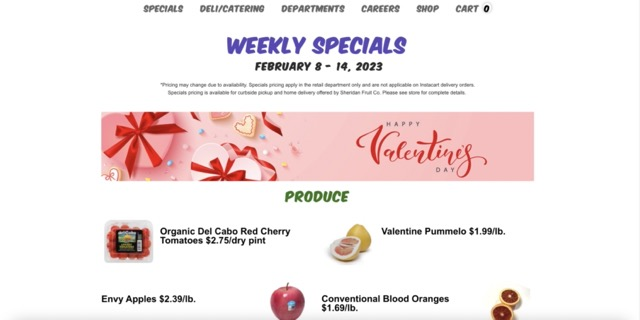
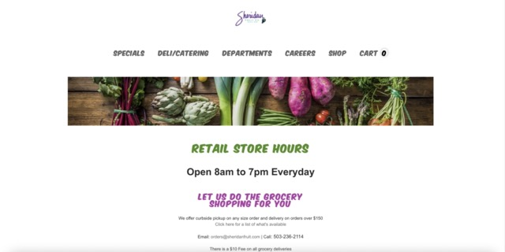
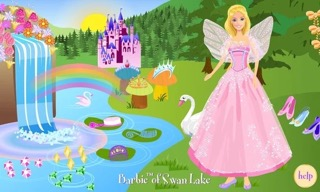
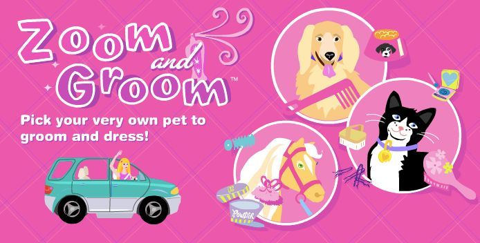
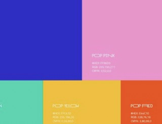

Two Sites You'd Do Over
Posted by Taylor on Feb 10
In the Brand Lab class I took my junior year, I had a project to rebrand Sheridan Fruit Co.
One thing that was bad about the brands identity was the website. The overall design aesthetic is outdated and everything is oddly centered. Most of the information on the site is either way too small or way too big. If I were to take on this site to do over, I would make the layout aesthetically pleasing but also consistent throughout all the tabs. I think the navigation is there on this site just not a clean layout of information in each tab.
Sheridan Fruit Website.
A website


Old Skoolin' It
Posted by Taylor on Feb 5
My current thesis topic is on the emotion of nostalgia and nostalgic marketing, so I've been flooding myself with things I missed from my childhood. One thing I missed about my childhood was the computer games. Every kids show and toy had a interactive website where you could play games for free. A core memory of mine is the online site for Barbie games. Looking at these images gave me so much memories of playing all of these games nonstop. Before having to download Adobe Flash Player, download an app, or paying for access to play was so much fun.


Barbie Games Video
Project One Journal Entry
Posted by Taylor on Feb 4
My plan for project one is to create a site that is on my four favorite snacks.
These snacks are special to my upbringing in Hawai'i. The homepage will introduce the user
to the four snacks and when one of the snacks are clicked on, you will see the origin history,
an illustration, and variations of the snack. This idea just came into my head with a lot of color
and cute cartoony illustrations. The image below represent the color scheme I have in mind.

My Moodboard
Inspiring Site
Posted by Taylor on Feb 5
I am a fan of fun interactive websites. When looking for inspiration,
I came across an interactive website by Salvatore Casalino. This site is like a nostalgic game that
takes this character which I assume is Salvatore himself, around his resume. There are some cool vector
illustrations and animations that make the website fun and a cool storytelling experience. I find this site
to be a resume or portfolio that isn't typical. It's fun and shows how creative this designer/developer is.
Salvatore's Interactive Resume